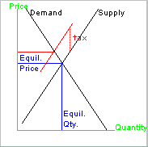

Revised August 23, 2013.
This program discusses supply and demand. It shows, with a simplified numerical example, how supply and demand in a market interact to determine how much of something is sold and bought, and what the price is.
The crucial economic theory ideas are:
Let's consider, for example, a market for local primary care services.
On which side of this market are primary care physicians in
office-based
practices? Are they on the Demand side or the Supply side?
Demand
Supply
When doing these tutorials, clicking the wrong answer can sometimes get you information that you don't see if you get it right every time. Whether you want to explore that is up to you!
On which side of this market would be a person with a bad sore throat?
Demand
Supply
BlueCross BlueShield of SC (an insurer)?
Demand
Supply
Palmetto Richland's emergency department?
Demand
Supply
Providence Hospital's outpatient surgery center?
Demand
Supply
Neither side
When they have illnesses or injuries, or fears of illness, people decide whether to seek medical attention. Presumably, they base their decisions on their assessments of how much they are likely to benefit from being seen by a medical professional, versus how much it will cost to be seen.
The cost to them includes
I will simplify that when I talk about demand in this tutorial. I will just look at what people have to pay and how that affects how much they want to buy. I will hold constant all the other costs that consumers incur to obtain primary care.
Here is a made-up demand schedule for primary care visits in an imaginary small city. The table below shows what quantities will be demanded at various prices.
Price Amount DemandedI've ordered the prices from highest to lowest. This way, the higher prices are higher up on your screen. Just to be sure you understand the table, please answer this: If the going price for an urgent visit is $10, how many visits per day will be demanded?
$ 55 per visit 100 visits per day
$ 50 per visit 200 visits per day
$ 45 per visit 300 visits per day
$ 40 per visit 400 visits per day
$ 35 per visit 500 visits per day
$ 30 per visit 600 visits per day
$ 25 per visit 700 visits per day
$ 20 per visit 800 visits per day
$ 15 per visit 900 visits per day
$ 10 per visit 1000 visits per day
The $10 price is evidently
attractive
to consumers, since so many patients show up at that price. Let
us
imagine, however, that a $10 per visit price is not attractive to
providers.
Imagine that doctors and other providers would accept 0 visits if the
price were only $10. If that is so, would this market be in
equilibrium if the price were $10?
Yes, in equilibrium
No, not in equilibrium
Leaving space until the above question is answered correctly.
⇑
⇑
⇑
⇑
⇑
⇑
⇑
⇑
⇑
⇑
⇑
⇑
Excess demand is the amount demanded minus the amount supplied. At a $10 price, there are 1000 visits per day of excess demand.
Excess supply occurs if the amount supplied is bigger than the amount demanded. That happens at high prices.
In a market that conforms to the economic theory of a free market, excess demand or excess supply encourage competition among the buyers or sellers. This tends to make the price change.
Excess demand tends to induce competition among the buyers, which forces prices up. Excess supply tends to induce competition among the sellers, which forces prices down.
Equilibrium is reached when there is no tendency for the price to move either way. At equilibrium there is no excess demand or excess supply.
Let's add a supply schedule on the table. Click the button next to the price at which this market is in equilibrium.
Price Amount Demanded Amount Supplied
$55 100 visits/day demanded 900 visits/day supplied
$50 200 visits/day demanded 800 visits/day supplied
$45 300 visits/day demanded 700 visits/day supplied
$40 400 visits/day demanded 600 visits/day supplied
$35 500 visits/day demanded 500 visits/day supplied
$30 600 visits/day demanded 400 visits/day supplied
$25 700 visits/day demanded 300 visits/day supplied
$20 800 visits/day demanded 200 visits/day supplied
$15 900 visits/day demanded 100 visits/day supplied
$10 1000 visits/day demanded 0 visits/day supplied
In the table below, click the button next to the price at which there is an excess demand of 400 visits/day.
Price Amount Demanded Amount Supplied
$55 100 visits/day demanded 900 visits/day supplied
$50 200 visits/day demanded 800 visits/day supplied
$45 300 visits/day demanded 700 visits/day supplied
$40 400 visits/day demanded 600 visits/day supplied
$35 500 visits/day demanded 500 visits/day supplied
$30 600 visits/day demanded 400 visits/day supplied
$25 700 visits/day demanded 300 visits/day supplied
$20 800 visits/day demanded 200 visits/day supplied
$15 900 visits/day demanded 100 visits/day supplied
$10 1000 visits/day demanded 0 visits/day supplied
In the table below, click the button next to the price at which there is an excess supply of 200 visits/day.
Price Amount Demanded Amount Supplied
$55 100 visits/day demanded 900 visits/day supplied
$50 200 visits/day demanded 800 visits/day supplied
$45 300 visits/day demanded 700 visits/day supplied
$40 400 visits/day demanded 600 visits/day supplied
$35 500 visits/day demanded 500 visits/day supplied
$30 600 visits/day demanded 400 visits/day supplied
$25 700 visits/day demanded 300 visits/day supplied
$20 800 visits/day demanded 200 visits/day supplied
$15 900 visits/day demanded 100 visits/day supplied
$10 1000 visits/day demanded 0 visits/day supplied
Suppose we have excess supply, as in this last example. The price will tend to go which way? Up Down
Leaving space until the above question is answered correctly.
⇑
⇑
⇑
⇑
⇑
⇑
⇑
⇑
⇑
⇑
⇑
⇑
Why does the price go that way when there is excess supply? Here are three possible reasons:
When prices or quantities change, that can be because the market is moving from disequilibrium to equilibrium.
Typically, though, when prices or quantities change, economists seek an explanation in movements of the demand or supply curves. Economists like to assume that markets are naturally in equilibrium. If they see something change, they figure that supply or demand must have changed.
This video shows an animated supply and demand diagram. The demand curve moves up and down while the supply curve stays still. (You may need to click the play indicator near the bottom left of the frame.)
In the diagram, when demand grows, the demand curve moves up and to the right. In supply-demand diagrams, to the right is up when you are talking about movements of the curves. That is because when one of the curves moves to the right, it means a bigger quantity at every price.
When the demand curve moves up and the supply curve stays still, both the equilibrium price and the equilibrium quantity go up.
This next video shows the supply curve moving while the demand curve holds still.
Why do the words "Supply Rising" sometimes move from higher to lower in the picture?
I messed up.
Up is to the right, when you're talking about movement of the curves.
In the movie just above, when supply is rising, ...
What happens to the quantity sold?
Quantity sold goes up.
Quantity sold goes down.
What happens to the price?
The price goes up.
The price goes down.
We can represent that in the supply and demand diagram with a vertical line at the quantity that we think people need. It's a vertical line because "need" is the same regardless of the price.
When the supply-demand intersection point is to the left of the "need" level, then the amount actually bought or sold is less than the "need." One way to raise the actual amount bought and sold is to raise demand. The diagram above shows that if you raise demand, you can move the equilibrium quantity out to the "needed" level. As the diagram also shows, this tends to raise the price.
For this to work, the supply curve can't be so steep that it does not reach the Need line. In real life, this would mean that raising demand works if the supply will be forthcoming if the price goes high enough.
The alternative way to get the equilibrium quantity out to the need is to raise supply. This means moving the supply curve to the right. As the preceding video showed, raising the supply curve makes quantity go up and makes the price go down.
For example, suppose that the President decides that war veterans need more health care services than they are currently getting.
Here are some more tactics for manipulating where the supply and demand curves cross. See if you can tell which do that by changing demand and which by changing supply.
You run advertisements telling men that they need get their
prostates
tested. What does this change in the market for prostate examinations?
Raises demand
Raises supply
You give pregnant women coupons for free fast food after they complete
a
certain number of prenatal visits. (Laugh if you like, but this was
actually done in South
Carolina in the 1990s.) What does this change in the market for
prenatal care visits?
Raises demand
Raises supply
You give doctors free vaccine. What does this change in the market for
inoculations?
Raises demand
Raises supply
The same ideas work in reverse if you think people are buying more of something than they need. For example...
You put a scary message of every pack of cigarettes. What does this
change in the market for cigarettes?
Lowers demand
Lowers supply
You put a tax on every pack of cigarettes. What does this change in the
market for cigarettes?
Lowers demand
Lowers supply
You forbid smoking in many places that are open to the public.
Changes demand
Changes supply
In the movie above, I have the demand curve stopping its move to the right when the equilibrium quantity gets to the Need. If the demand curve kept going to the right, the equilibrium quantity would be greater than the Need. Some economists argue that health insurance with no copayment moves the demand curve so far to the right that the equilibrium quantity of services exceeds what people really need.
For an example of how you might use a supply-demand diagram to figure something out, here is a digression about sin taxes, like the cigarette tax ...
You can regard the cigarette tax as increasing the cost of supplying the cigarettes. Adding a tax raises the cost per pack by the amount of the tax. The diagram here shows the effect. The supply curve moves down, which is to the left in this diagram. The vertical distance between the old supply curve (shown in black) and the new supply curve (shown in red) is the amount of the tax per pack. The equilibrium quantity supplied and demanded is lower (more to the left). That is the intended goal of the tax increase.
If the supply curve has a positive slope ...
so that it's not horizontal =... then the price increase ...
so that supply is not completely elastic
(the distance between the blue and red lines)... will be less than the tax increase.
This means that the customers and the sellers will share paying the tax on each pack bought.
Another digression ...
Why should a supply curve has an upward slope? In theory, it is because some sellers have higher costs than other sellers, or that individual sellers have some facilities that are more productive than others. A farmer may have some fields that are better than others. So might an oil company. At higher prices, the less productive facilities can operate at a profit. At lower prices, they can't, so they shut down, which means less stuff offered for sale. When the tax is imposed, some high-cost sellers drop out of the market. The lower-cost sellers who stay in make less profit.
Please e-mail comments to